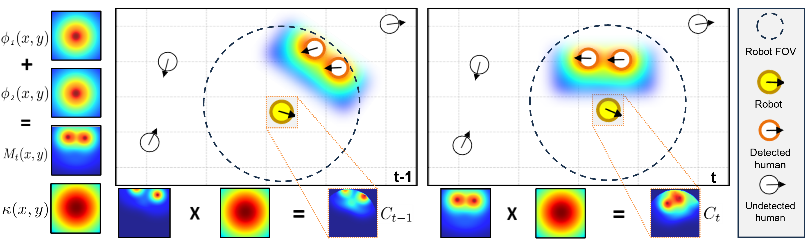

Method
Our reward model promotes socially compliant navigation by integrating Hall's proxemics theory into the reinforcement learning signal. For each detected human, we define a radially symmetric proxemic field φj(x, y) modeled as an isotropic Gaussian mixture over the four interpersonal zones (intimate, personal, social, public). These per-human fields are aggregated into a social cost map Mt(x, y) and convolved with a robot-centered Gaussian kernel κ(x, y) over the robot's instantaneous field of view Ωt.
The resulting scalar proxemic intrusion cost Ct quantifies the spatial overlap between the robot's local neighborhood and human-induced proxemic costs. The reward is defined as the negative temporal difference −λ ΔCt, penalizing increasing intrusions and rewarding movement toward lower-cost regions, without encouraging the robot to stall.

Detected humans generate individual proxemic fields φj(x,y), aggregated into a social cost map and locally weighted by a robot-centered kernel κ(x,y). The proxemic reward rprox,t is computed from the temporal difference of the resulting cost.
Results
We integrate our proxemics-based reward Rp into two established DRL navigation methods — AttnGraph and MultiSoc — and compare against three baselines: no social reward (Base), a distance-based reward (Rd), and a velocity-based reward (Rv). Experiments are conducted in two crowd scenarios: Circle Crossing and Corridor, evaluated on both navigation metrics (success rate, collision rate) and social metrics (minimum distance, social compliance, time-to-collision, jerk).
Across all settings, Rp consistently yields the strongest gains on social metrics while remaining competitive on navigation performance. The robot maintains larger clearances from pedestrians, spends less time within intimate zones, and exhibits smoother trajectories — confirming that grounding the reward in proxemic zones provides a dense, informative learning signal that goes beyond collision avoidance.

Sample trajectories for AttnGraph (top row) and MultiSoc (bottom row) under Base, Rd, Rv, and Rp (left to right). Rp consistently selects wider, more peripheral passing arcs avoiding dense intersections of crowd flow.